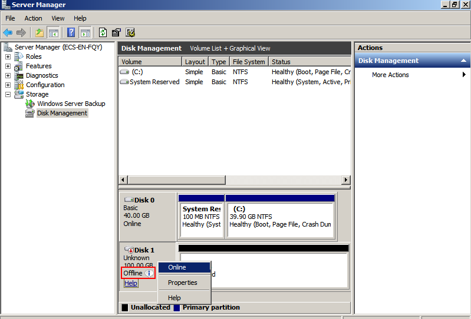
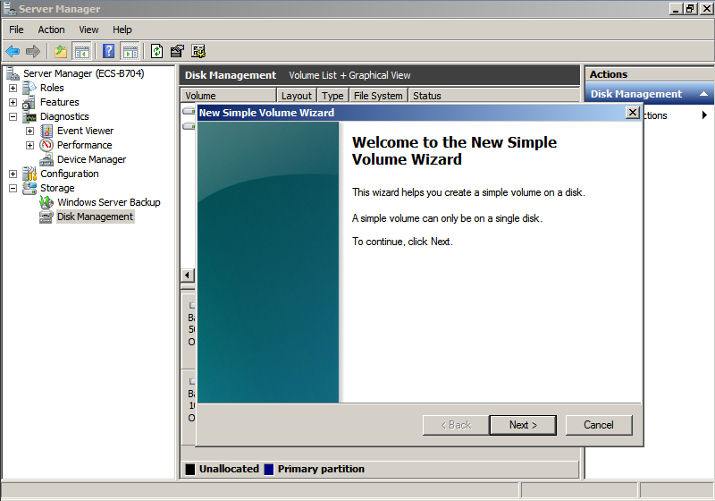
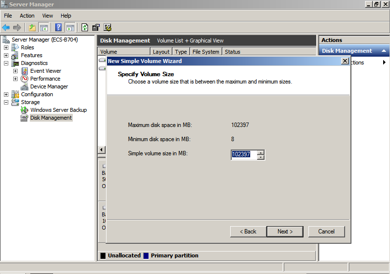
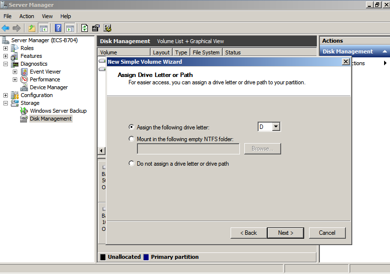
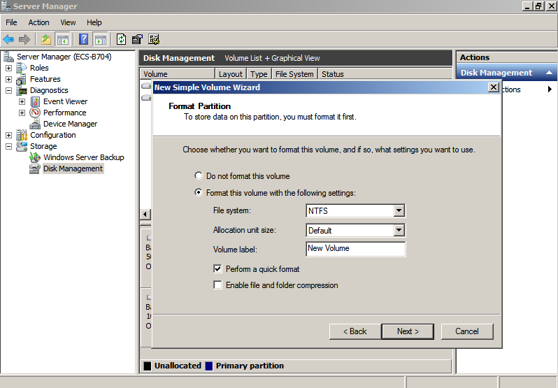
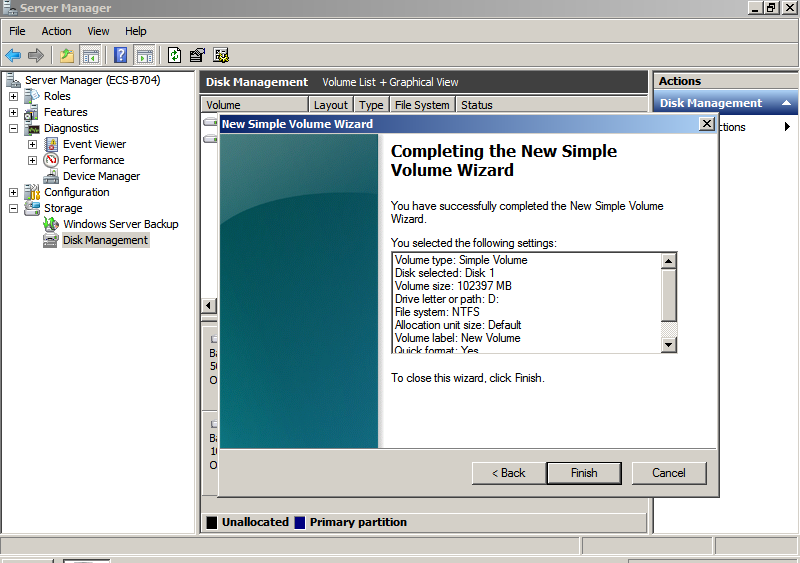

Scenarios
This section uses Windows Server 2008 R2 Enterprise 64bit to describe how to initialize a data disk attached to a server running Windows.
The maximum disk capacity supported by MBR is 2 TB, and that supported by GPT is 18 EB. Therefore, use the GPT partition style if your disk capacity is larger than 2 TB. For details about disk partition styles, see Scenarios and Disk Partitions.
The method for initializing a disk varies depending on the OS running on the server. This document is used for reference only. For the detailed operations and differences, see the product documents of the corresponding OS.
Prerequisites
- A data disk has been attached to a server and has not been initialized.
- You have logged in to the server.
- For how to log in to an ECS, see the Elastic Cloud Server User Guide.
- For how to log in to a BMS, see the Bare Metal Server User Guide.
Procedure
- On the desktop of the server, right-click Computer and choose Manage from the shortcut menu.
The Server Manager window is displayed.
- In the navigation tree, choose Storage > Disk Management.The Disk Management window is displayed.
- Disks are displayed in the right pane. In the Disk 1 area, right-click Offline and choose Online from the shortcut menu to online the disk.Figure 2 Online the disk

If the disk is offline, you need to online the disk before initializing it.
- After making the disk online, the disk status changes from Offline to Not Initialized. Right-click the disk status and choose Initialize Disk from the shortcut menu, as shown in Figure 3.
- In the Initialize Disk dialog box, select the target disk, click MBR (Master Boot Record) or GPT (GUID Partition Table), and click OK, as shown in Figure 4.

The maximum disk capacity supported by MBR is 2 TB, and that supported by GPT is 18 EB. Because a data disk currently supports up to 32 TB, use the GPT partition style if your disk capacity is larger than 2 TB.
If you change the disk partition style after the disk has been used, the data on the disk will be cleared. Therefore, select a proper disk partition style when initializing the disk.
- Right-click at the unallocated space and choose New Simple Volume from the shortcut menu, as shown in Figure 5.
- On the displayed New Simple Volume Wizard window, click Next.Figure 6 New Simple Volume Wizard
 - Specify the volume size and click Next. The default value is the maximum size.Figure 7 Specify Volume Size
 - Assign the driver letter and click Next.Figure 8 Assign Driver Letter or Path
 - Select Format this volume with the following settings, set parameters based on the actual requirements, and select Perform a quick format. Then, click Next.Figure 9 Format Partition
Figure 10 Completing the partition creation
 The partition sizes supported by file systems vary. Therefore, you are advised to choose an appropriate file system based on your service requirements.
- Click Finish. Wait for the initialization to complete. When the volume status changes to Healthy, the initialization has finished successfully, as shown in Figure 11.